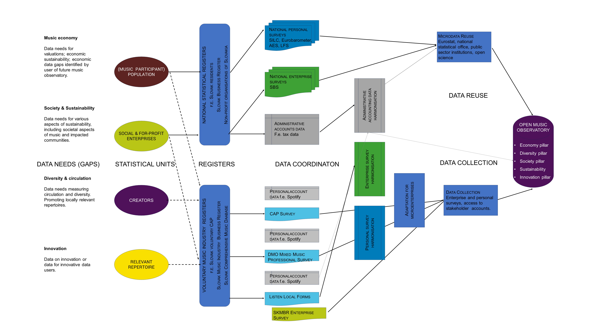

Tip
This is a manuscript developed for Open Music Europe following the Open Policy Analysis Guidelines. All materials related to this research can be found in the open repository at https://github.com/antaldaniel/music-indicators-description. Bookmark this document as a webpage. Permanent storage and DOI: Zenodo.
Funded by the European Union. Views and opinions expressed are however those of the author(s) only and do not necessarily reflect those of the European Union or the European Research Executive Agency. Neither the European Union nor the granting authority can be held responsible for them.
Executive summary and editing notes
Note
- The methods and indicators will be presented in D1.1, D2.1 and D3.1, and perhaps in D4.1 Because the same indicator development methodology is used in
WP1,WP2,WP3andWP4, this is part of a separate document which defines the entire data-to-policy pipeline, i.e., the main objective of the grant. Data Pillars in the Open Music Observatory (html, pdf, docx, epub)
- Indicators that bring transparency to music streaming and zero-marginal-price (free) uses of music are developed, as well as indicators about the economic contributions of music to the national economy. This is the subject of this main document, and can be found Economy of music in Europe: Novel data collection methods and indicators in html, pdf, docx, epub formats.
I. Defining the Data-to-policy Pipeline
Open Music Europe offers a data-to-policy pipeline, which extends the music data pipeline to processing data that is ready to use in evidence-based business and policy administration. A data pipeline is a method in which raw data is ingested from various data sources and then ported to a data store for further analysis, in this case, to an open, shared, collaborative music observatory. We extend this pipeline using reproducible research techniques, a novel application of the Open Policy Analysis Guidelines, and good statistical practices to support evidence-based policy analysis, scientific music research and sound business strategy building. In this last leg of the pipeline, we emphasise usability for our project’s target audiences and good documentation practices. We want to ensure that our data is high quality and that users can understand it well; such properties guarantee that it can support robust and correct business, scientific or policy conclusions. For supporting decisions, we usually process the data into an indicator or a set of indicators, which are displayed as a part of a scoreboard dashboard or a standardised business or policy report.
II. Building a European Music Observatory
II.1 Data coordination and ingestion: what data exists in some form, what needs to be reprocessed, and what needs to be collected? How it will reach the observatory?
II.2 Curated statistical data: a revision and ingestion of already processed statistical data.
II.3 Reusable microdata and public sector information: a map to data that is not statistically processed (microdata) but exists and we can use it.
II.4.Data linking and statistical registers: the statistical framework that coordinates the process.
II.5 Data collection for the observatory.
I.1 Data coordination and ingestion
A data pipeline is a method in which raw data is ingested from various data sources and then ported to the data store for further analysis, in this case, to an open, shared, collaborative music observatory. We have two aims:
- We want to create a data production method that makes already available public data more usable for music businesses, researchers, and policymakers and links further data to fill data (information) gaps.
- We want to enable data collection that is complementary to already existing high-quality, reliable data collection programs and only connects data that is compatible with pre-existing data and that does not exist already.
To achieve these goals, we want to define statistical processes linking the production of official, governmental statistics (free to reuse under the Open Data Directive and the Data Governance Act) with scientific or business-oriented market research statistical production. The production of statistical data is discussed in the context of the broader term of statistical processes used by the statistical authorities to develop, produce and disseminate statistics in the European Statistical System (ESS) Handbook for Quality and Metadata Reports, which is a European statistical standard (European Statistical System (ESS) 2021). The ESS recognises the following data collection and production processes:
Survey: a direct collection of individual data from a sample of respondents for statistical purposes with three subtypes, depending on whether data are collected from all units, and if not, whether probability sampling or non-probability sampling is used (Probability Survey, Non-Probability Survey and Census Survey).Administrative data collectionrefers to the set of activities involved in the collection, processing, storage and dissemination of statistical data from one or more administrative sources.
The first leg of the data-to-policy pipeline requires the creation of a data coordination program.
1, We want to reuse publicly funded data collection to avoid duplication. For this, we need to understand, describe and analyse those statistical processes that create data of interest for Open Music Europe. For example, various survey programs, such as AES, Eurobarometer, or EU-SILC, produce cultural access and participation surveys, critically important data sources about the enjoyment and creation of music.
- We need to create open science statistical processes, for example, a harmonised Open Music Europe CAP survey, that collects compatible data with the pre-existing Slovak and Hungarian national CAP surveys and the EU-wide CAP surveys since 2003.
The first leg of the data-to-policy pipeline requires the creation of a statistical infrastructure, a data observatory, that can receive processed and unprocessed public and private data, link them, and offer a data pipeline for newly collected data, too.
I.2 From data to indicators
Statistical indicators, or, in short, indicators, are derived from accounting systems and statistical data.
Accounting systems are coherent and integrated accounts, balance sheets and tables based on a set of agreed rules. Statistical data is also collected based on agreed and coherent rules.
The use of indicators is widespread in the economics, business, social aspects, or public policies of music and the broader cultural and creative industries agenda. Statistical indicators, or, in short, indicators, are derived from accounting systems and statistical data.
Accounting systems are coherent and integrated accounts, balance sheets and tables based on a set of agreed rules. Statistical data is also collected based on agreed and coherent rules. What kind of accounting systems are we likely to use?
Economic and financial datais usually stored by standardised account or ERP systems and follow internationally harmonised rules of bookkeeping. This accounting data is used for the creation of tax returns, for example, which are the most important administrative sources of governmental statistics. Or they produce the annual balance sheet and profit and loss statement, which are the most important public data sources on a company’s activities.Environmental or sustainability reporting datais harmonised by global initiatives like GRI and currently they are undergoing European standardisation into the European Sustainability Reporting Standards. It is an important goal of Open Music Europe to design administrative or survey processes that collect sustainability from and for the music businesses and institutions.Royalty accountsare specific financial accounts of the copyright-based industries such as literature/book publishing or music. Because the music industry deals with the biggest number of individual royalty earning assets (apart from photography, which is a far less globalised and harmonised industry), the music industry has perhaps the most advanced royalty accounting practices in the world. We plan to make use cases to create data processes to tap into this industry-specific source in a way that the datasets created complement well other administrative or survey data sources.
A statistical indicator summarises a key issue or phenomenon derived from a series of observed facts; it is a generalisation of the information in the data. It is often compared metaphorically to traffic signs that help travelers to arrive to their destinations safely. The knowledge we gain from indicators is used to uncover social, environmental or economic phenomena and establish connections between them. It also provides a basis for influencing and controlling such phenomena on a business level (for example, key performance indicators) or the level of public policy (for example, ex ante and ex post evaluation indicators.)
A statistical indicator is a summary measure related to a key issue or phenomenon and derived from a series of observed facts. [Kotzeva et al. (2017), pp. 7]1
A statistical indicator, or simply, indicator, is the representation of statistical data for a specified time, place or any other relevant characteristic, corrected for at least one dimension (usually size) so as to allow for meaningful comparisons. It is a summary measure related to a key issue or phenomenon and derived from a series of observed facts.

The aim of statistical data collection is the creation of sets of data that can be generalised well; for example, when we collect data about people, it includes data on people from all relevant age or gender groups. Open Music Europe is using and developing data collection from primary sources, such as surveys and ephemeral big data, or taking samples of large, pre-existing but biased datasets, such as royalty accounts.
I.3 From indicators to policies
Indicators should be used as traffic signs, and not as route plans. Indicators do not give an explanation to a problem or reveal a solution; they must be interpreted in the context of domain-specific knowledge. While the word policy is very often used in the context of public policies, we use it in a more general meaning: a course or principle of action adopted or proposed by an organization or individual. Open Music Europe does not offer tailored data analysis for organisations or individuals, it offers indicators and other data products that can help the setting of policies for public policy, for-profit and social music enterprises, and hopefully even for individual creators. We would like to do this with placing indicators into reproducible reports. These reports contextualize our indicators, and end the data-to-policy pipeline.
Unlike the data from which they are derived, indicators are used for specific purposes. The specific purpose of an indicator is determined by its context, the questions it seeks to answer, and the party or parties asking these questions. (Eurostat 2014, 1:p7)
Indicators are used for specific purposes to support decisions with generalised information derived from the data. The specific purpose of an indicator is determined by its context, the questions it seeks to answer, and the party or parties asking these questions.
There are many conceptualisations on how policies should be set for public organizations or businesses; a review of policy cycles is beyond the scope of this paper. For presentation purposes, we use the policy cylce framework of Howlett and Ramesh adopted by Eurostat for indicator design guidance (Howlett and Ramesh 1995; Eurostat 2017). This is a widely used textbook that over 25 years went through four major editions.

In an evidence-based policy cycle indicators should be provide different factual information. Different indicators may be needed in the first, Concept phase when a business or public body is seeking alternatives to solve a problem: for example, to increase royalty revenue for their artists or assets, and in the final Outcome or Impact assessment. While impact assessment is often associated with public policy, the current sustainability management techniques require music businesses to implement processes that reduce, for example, fossil fuel use, and eventually have a positive impact (in quantitative terms, a negative change) on greenhouse gas emissions.

Figure 2. Policy evaluation cycle with indicators, DOI: 10.6084/m9.figshare.23498441
Several alternative options are available to deal with complexity, each one with specific properties that make them more or less fit for a given purpose. This short summary follows the Communicating complexity in the Eurostat guide methodology book (Kotzeva et al. 2017, 2:34–39.).
Developing indicator sets (including scoreboards or dashboards as specific types of sets) and showing all the information for each individual indicator.
Combine indicators on different phenomena and/or dimensions into aggregate, composite or synthetic indicators. A composite indicator is created when individual indicators with different measurements units are combined into a single measure.
Show the detailed information on the individual indicators while combining the assessment in ‘aggregated dashboards’.
Regarding the communication of complex subjects, Eurostat normally opts for sets of indicators often in a form of scoreboards or dashboards, and Open Music Europe will do the same, because composite indicators themselves require a higher level of data literacy to interpret correctly.
Scoreboards are concise lists of key performance indicators (often derived from a larger set) which are assessed against specific targets. Dashboards, on the other hand, do not necessarily have an evaluation function, in the sense that the observed indicator values are not necessarily compared to (policy) targets to assess performance2.
Following the data pillars of the Feasibility study for the establishment of a European Music Observatory : final report (Commission et al. 2020), we foresee the indicators made in our sample reports with the following topics:
Report on the European Music Economy: Support stakeholders with economic questions, such as taxation, price-setting and economic exploitation, and advocating for policies that better support the development of the industry or its parts like publishing (Open Music Europe 2023e).
Report on Music Diversity and Circulation in Europe: Local content regulations, maintaining the diversity of music circulation in Europe, and other aspects of diversity (Open Music Europe 2023b).
Report on Music, Society, and Citizenship in Europe: Inform about the societal aspects of music, amateur practices, education, and sustainability (Open Music Europe 2023d).
Report on Music Innovation & Technology in Europe: Novel data-driven applications (Open Music Europe 2023c).
I.4 Interactive communication of indicators and Open Policy Analysis
Indicators are most important in communicating data in a business or public policy context. To discuss this communication, it is helpful to distinguish between simple one-directional information transmission and communication as an interactive process. The informational or one-directional communication of indicators focuses on information transmission between a sender and a receiver. The interactive communication of indicators means that the message is actively constructed by both the sender and the receiver(s), who exchange information in a feedback loop.
Like the mediators who strive to communicate between different parties to find their point of agreement, communication through indicators allows to overpass boundaries between policy, science, statistics and public debate. Thus indicators are able to reveal various phenomena to different user groups — policy makers, researchers, citizens, journalists, statisticians, specialists in different domains. Reaching various types of audiences through their communication function, indicators can ensure that statistics are usable and useful (Kotzeva et al. 2017, 2:p7.).
Going back to the often used traffic management example, a simple one-directional indicator is a speed limit sign on a static road sign; a more interactive version uses sensors and cameras to measure the actual traffic density and to recommend a speed at which vechicles will not jam the road.
Interactivity allows for exchange of ideas and a shared creation of the intended content of the message that the planned indicator conveys. This requires user involvement in the construction of indicators and indicator sets. The developed indicators need to be based on a wide consensus reached through a dialogue involving as many potential user groups as appropriate. This way they can have their say on the relevance of the statistical message. For example, on Digital Streaming Platforms (DSPs) a music creator or label is facing with hundreds of hidden prices. One of our aims is to create price indicators that help a music label, distributor or a band to direct marketing efforts towards more valuable streaming segments. We need to create a price indicator that is as simple as a stock exchange index which is often followed by small and institutional investors alike.
PRINCIPLE 11 Relevance: European Statistics meet the needs of users. 11.1. Procedures are in place to consult users, to monitor the relevance and value of existing statistics in meeting their needs, and to consider and anticipate their emerging needs and priorities. Innovation is pursued to continuously improve statistical output. 11.2 Priority needs are being met and reflected in the work programme. 11.3 User satisfaction is monitored on a regular basis and is systematically followed up.
The European Statistics Code of Practice (European Statistical System Committee 2018) see the Quality Assurance Framework of the European Statistical System (European Statistical System (ESS) 2019, 45–46) goes a step further in interactivity. The idea of interactivity in the statistical indicator design process originates in the the European Commission’s more-than-information approach: „Communication is more than information: it establishes a relationship and initiates a dialogue with European citizens, it listens carefully and it connects to people. It is not a neutral exercise devoid of value, it is an essential part of the political process.” The Commission refers here instead of the ‘target audience’ to ‘citizens’ because communication is not just a technical exercise of message delivery but part of a democratic involvement of citizens (Kotzeva et al. 2017, 2:p7.). Similarly, a good business indicator is not only printed in the annual financial or sustainability reports of a company: it is often cited in management discussions or communicated by line managers to workers to direct their focus. To make indicators conversation-starters or arguments in professional discussions, we have to ensure their usability: we not only need to involve potential users in the design phase, but we have to get regular feedback on the usability and professional improvement of the indicators.
II. Building a European Music Observatory
The European music stakeholders would like to see a solution “as a centralised music data and an intelligence hub at [the] European level” with the creation of the European Music Observatory (Commission et al. 2020). As a Finnish example and CEEMID have shown, the inherent conflicts of interest and the presence of many microenterprises favour the incorporation of decentralised approaches, too (Osimo et al. 2019). The EMO Feasibility Study also stresses the need to learn from the CEEMID project and exploit richer open data sources, which usually require the development of open-source processing capacities.
According to the study published by the European Commission on the impact of open-source software (OSS) and open-source hardware (OSH) on the European economy, conducted by Fraunhofer ISI and Open Forum Europe on 6 September 2021, open-source software contributed between €65 to €95 billion to the European Union’s GDP (European Commission et al. 2021). It promises significant growth opportunities for the region’s digital economy. The 2020 report on the Economic Value of Open Data estimated the value of open data available in the European economy at €184 billion and is forecasted to reach between €199.51 and €334.21 billion in 2025 (Huyer and van Knippenberg 2020). To unlock this potential, the study makes similar but less specific recommendations as the OSS/OSH study described above.
The Open Music Europe project and its grants aim to build an Open Music Observatory based on the Reprex background minimum viable product, the Digital Music Observatory. The OMO aims to develop the Digital Music Observatory further and fill up four “data pillars” as defined by the EMO Feasibility Study to reach Technical Readiness Level (TLR) 7: a system prototype demonstration in an operational environment for Horizon Europe scientific research outputs, pan-European use by representative music stakeholders, and proven ability to scale up various pillars to further national environments. We want to accomplish this goal with as many OSSH and open data components as possible.
The Music Economy Pillar will help the better valuation and business representation of European music and the creation of more jobs, revenues, and gross value added in the sector with data and evidence for better policies and better business strategies. WP1 of Open Music Europe plans to fill this pillar with an initial set of indicators that serve this purpose. This means that the data and visualisation output from WP1 T1.2 are incepted as the new economy pillar.
The Diversity and Circulation Pillar will prevent unnecessary music import into market segments where European creators suffer from weak institutions that put them at a competitive disadvantage. Furthermore, it would help European creators and music businesses to develop business and public cultural export strategies to find new export markets. How we design this pillar of the OMO would also support designing better local content regulations and better monitoring and enforcement of them. This means that the data and visualisation output from WP2 T2.2 are incepted as this new diversity pillar.
The Music, Society, Citizenship Pillar will support better music education and better cultural policies by providing data on the non-economic value of music. The way we plan the initial data assets of this pillar can support the development of Environmental, Social and Governance (ESG) management, control, and reporting tools with reliable, science-based benchmarks. Environmentally and socially more sustainable business administration of music and fighting various forms of bribery in music requires high-quality data that is best collected, processed and disseminated in a data observatory.
The Innovation Pillar will be helping other third-party music innovators with open data.
The delivery has two alternatives, contingent on the results of T5.3 exploitation plans and the development of the planned official European Music Observatory. The observatory will reach TLR 7 and be handed over to the European Music Observatory as a functional reproducible research, open and big data collection part of the future institutions.
Should the planned, official European Music Observatory fail to be completed by the end of 2025 or will not be in the position to receive the OMO as a complete system, all fallback option is to include the OMO in the Digital Music Observatory at TRL Level 8 with a business continuation plan, but with limited funding and servicing capacity (a complete and operational data observatory without official recognition, with a limited budget and servicing capacity as an open collaboration project open to any representative national or EU music stakeholder organisation.)
II.1 Data coordination and ingestion
Open Music Europe offers a ‘data-to-policy’ pipeline, which extends the music data pipeline to processing data that is ready to use in evidence-based business and policy administration. This requires the coordinated ingestion of pre-existing data that is readily available and what needs to be processed, or where further data needs to be collected by primary statistical data collection methods.

When the data is available in a trustworthy data sources, we will still reprocess it.
Coordination of the Music Economy pillar
Out of the four pillars mentioned in the previous subsection, the Music Economy Pillar has the most advanced description of what data gaps it wants to fill and how. Since this work follows to Open Policy Analysis Guidelines, you can access the entire repository of the work and see the living document in development progress on [GitHub](https://github.com/dataobservatory-eu/report-european-music-economy), or review it periodically on Zenodo (Antal, Kmety Barteková, and Remeňová 2023).

II.2 Curated statistical data
In the last two decades, the availability of statistical data increased to the extent that non-professional users often do not find the information they need. Furthermore, statistical authorities increasingly release data that is less processed and requires statistical and domain-specific know-how to transform into a form that music professionals and researchers, or policy-makers can readily use.
Our seemingly trivial first data pipelines are building access to curated and if needed, re-processed statistical data towards high-quality statistical data sources. The rOpenGov collaboration maintained by the University of Turku, where REPREX is an active developer, provides reproducible tools to access such sources. These tools will be further developed into a statistical ecosystem with a more friendly user interface in WP4.
A good example of these tools will be used and further developed in WP3. The iotables R package (Antal 2021) on rOpenGov, developed by the leadership of REPREX, provides access to the Eurostat data warehouse’s symmetric input-output data. Symmetric input-output and auxiliary tables connect thousands of poorly usable statistical indicators into analytical tables, which can be used for various economic analyses and social or environmental impact assessments. The iotables package helps the user to bring together the necessary data from Eurostat’s data warehouse (that includes that from the European Environmental Agency) and perform data processing and algebraic transformations that result in readily-usable indicators and multipliers. This service can be seen as a middleware between data processing and data analysis: most analysts who know how to work with the Leontieff- or Ghosh system to work with this data would spend days just to put together the necessary indicators from the original source.
II.3 Reusable microdata and public sector information
The public sector already holds an extraordinary amount of data that can contribute to improving the internal market and to the development of new applications for consumers and legal entities. The Directive 2003/98/EC established a set of minimum rules governing the re-use and the practical arrangements for facilitating re-use of existing documents held by public sector bodies of the Member States; the rules of such data access were updated in 2019 with the adoption of the Directive (EU) 2019/1024 of the European Parliament and of the Council of 20 June 2019 on open data and the re-use of public sector information (recast) (European Parliament and the Council 2019).
According to the preamble of the Directive, information collected, produced, reproduced, and disseminated within the exercise of a public task or a service of general interest is an important primary material for digital content products and services, with a special emphasis on publicly funded scientific research, such as Open Music Europe, or other Horizon Europe framework funded projects. They may form data monopolies and prevent innovation, start-ups, and SMEs from entering into the Single market; for natural persons and civil society organisations, they may form an insurmountable barrier to control the political process, public policy, or engage in advocating for better policies3.
Because the amount of data carriers, such as digital documents containing datasets, text, and data visualisations, exceeds what humans can possibly read, curate, and analyse, the directive also emphasises the need to provide access to public sector information in open and machine-readable formats and via APIs4.
The European open data regime not only sets the normative standards for our projects and its data management, but it also provides an opportunity to tap into a wide array of data sources in public institutions. Building a framework to receive and process large amounts of public information is the task of our WP5 (Open Music Observatory), but it requires much work in the other work packages, too, because domain-specific knowledge and curation are needed to identify the necessary data to be ingested, the procedures to process the data, and to check its quality.
By applying the same framework (principles, legal norms, organisational and technical standards) as the national statistical offices themselves as regards public and private administrative data sources, Open Music Europe can facilitate the data supply for the music sector in multiple ways:
- We can engage with statistical offices and government and offer them our innovations to be scaled up using the publicly funded and legally more powerful national statistical frameworks;
- Using industry or research funds, we can fill data gaps with complementary data that integrates well with novel data products resulting from the increasing reliance of statistical organisations on third-party data.
The framework for this work is developed in WP5 as the music observatory. The domain-specific elements of this framework must be developed by four work packages.
II.4. Data linking and statistical registers
“A register aims to be a complete list of the objects in a specific group of objects or population.” (Anders and Britt 2007) We are planning music industry registers where the objects are music works and sound recordings (in statistical terms, music products), and the populations are music authors, music performers, groupings of performers (as the majority of the musicians perform, record, release in groups, ensembles, orchestras), record labels (which may be formal and informal businesses) and music publishers (enterprises.) From a statistical point of view, our planned music industry registers can be seen as “administrative registers” because they were not initially created for a statistical purpose by a statistical authority.
A statistical register is a continuously or regularly updated set of objects for a given population. It contains information on the identification and accessibility of population units as well as other attributes which support the surveying process of the population. It serves as a constantly updated list of potential data sources: people or enterprises, for example, who may be invited to a sample survey or a census. The statistical register is both a coordination tool for data collection (everybody is found who should provide data), and an important data quality management tool (we know if somebody was not found, how it will distort our resulting datasets.)
The register-statistical processing includes various procedures to edit and code data, handle missing observations, etc., which are necessary to transform an administrative register that was initially not created for statistical data collection (for example, a register of music authors or producers of sound recordings which is created for the collection of royalties) into a statistical register. Or, more precisely in our case, because we aim to create economics statistics compatible with the system of national accounts and existing business statistics, into a statistical business register (henceforth: SBR).
The statistical business register is an essential tool for creating survey frames or sample frames, in other words, to organise statistical data collection. In non-technical terms, this register is necessary to decide who should get a data request.
For a sample survey, the register is used to draw a lottery of those members of the population who will be invited to provide data.
In a census-type survey, all registered members of the population, for example, all music labels, will receive an invitation to an interview or form.
In the case of a register-based survey, all members of the register, for example, all collective management societies in the territory, will be requested to send data directly from their databases.
Particularly register-based surveys are ideal tools for reducing the cost of the survey and the burden on respondents, because it reuses already well-processed data. For example, if we can use a collective management societies royalty accounts systems (with proper data protection) as a data source, we do not have to ask every musician, label or publisher to tell us their revenues in euros from the previous year.

The use of registers and turning them into statistical registers is so essential for creating statistics that the European and Slovak statistical laws allow the official statistical offices to request access to institutional registers of other state bodies for statistical purposes. The use of the tax register to create enterprise data or court registers to create statistics on divorce or criminality is usual in every European country.
The use of non-state registers is getting increasingly common, too. In such cases, a private register (for example, the music work register of SOZA) is based on an agreement between the statistical authority and the private entity. For example, we are well aware of the fact that self-employed musicians, i.e. the majority of the musicians, rarely supply data for statistical purposes because they do not participate either in the Roc-01 or Roc-02 surveys (which form the basis of most structural business statistics in Slovakia) and only randomly selected, and not as musicians, in the LFS-survey, another important source. Creating statistics about industries, activities and products that self-employed professionals dominate may require special registers.
Self-employed professionals who are nonemployers, i.e. one person enterprises, are frequently under-covered but tend to play a very important role in several ISIC sections (e.g. section M (professional, scientific and technical activities) and class 9000 [i.e. performing artists, including musicians – note by authors]). If they are registered with an administrative source they should be included in the SBR. Typical administrative sources are social security files, income tax files, VAT files, files of chambers of commerce and of crafts, government registration files, and lists of doctors. (‘United Nations Guidelines on Statistical Business Registers. Final Draft Prior to Official Editing’ 2020, 40.)
We believe that the best registers for the creation of music industry statistics are the registers of the collective management societies – authors, performers and producers of sound recordings cannot receive some of the royalties without these organisations, so almost all active musicians, and even heirs of deceased musicians are members in these organisations. Another important sources are the catalogues and databases of libraries (which collect information, among other things, on the authors and their published books) or music libraries and music information centers (which collect similar information on published music works.)
Our pilot register is the Slovak Comprehensive Music Database, which aims to connect and synchronise various existing registers of published music works and commercially released or archived music sound and video recordings. Because such works are protected or may be protected by copyrights and neighbouring rights, and because the act of publishing (of a work) or a [commercial] release (of a recording) reveals not only the music but its title and authors and/or producers and performers, such registers are an ideal first step to create a statistical register, even if this is not their primary function. In our view, the primary function of the Slovak Comprehensive Music Database is to help the promotion and rights management (royalty collection) of all Slovak music abroad as well as in Slovakia and to help new applications that help radio stations to comply with local content regulations, or educators to help the discovery of local, regional and national music for children and their parents, to name a few.

Non-statistical registers are playing an increasing role in creating new statistical products from commercial or other sources and even in creating reliable statistics from big data. The UN Structural Business Register—which is very heavily influenced by the most advanced European guidelines—“consider that commercial data available from private companies […] may be considered in the same way as administrative [statistical] data. Use of such data can be a cost-effective way of improving the SBR since these databases are extensively researched and managed for commercial benefit by their owners. […] Other sources include data collected by companies for their own commercial purposes, for example data owned by market information companies and companies that collect data and maintain directories and databases that they provide to their customers for commercial purposes. (‘United Nations Guidelines on Statistical Business Registers. Final Draft Prior to Official Editing’ 2020, 59–60.)”
Another critical use of a new, non-statistical register (after register-statistical processing) may allow the ex ante or ex post (retrospective) harmonisation of official statistical and scientific or business surveys. For example, suppose the offical Roc-02 survey undersamples music enterprises. In that case, we may conduct a similar, voluntary and privately funded survey that collects further music-industry-specific answers in a way that they remains harmonised with the Roc-02 survey. The retrospective harmonisation of answers into a joined database allows the creation of music-industry statistics even if the official Roc-02 sample would not permit such a new division.
A usual approach to extend the functionality of existing statistical registers of statistical offices with minimal complication is to extract parts of the SBR and link it to other data sources, resulting in an SBR satellite, which is outside and independent of the SBR. This can alleviate concerns about statistical confidentiality and the mixing of workflows among official statisticians, open science and business users.
“The SBR may support the satellite approach in different ways. If the units available in one or more frozen frames are linked to data from sources other than those used in the SBR, then the combined result may be a semi-manufactured statistical product blending statistical and administrative data. The difference from a sample is that, in this kind of satellite, information is linked to all units in the underlying population. This approach is useful, for example, to provide economic indicators on self-employed (income estimation) or to compile the regional distribution of production factors to support regional accounting information.” (‘United Nations Guidelines on Statistical Business Registers. Final Draft Prior to Official Editing’ 2020, p32)
We see the creation of a Music Industry Statistical Business Register Satellite that turns the core units of the Slovak Comprehensive Music Database into a Slovak Music Industry Register, and after register-statistical processing into SBR Satellite itself, a necessary first step towards the extension of the existing national accounts into a satellite music industry account. This approach may be viable in any European country; however, Slovakia is an excellent place for demonstration because it already has a cultural and creative industries satellite account system (which does not include a music industry account.)
The Music Industry Statistical Business Register Satellite would support a high-quality ex ante and ex post survey harmonisation, because it would support the sample design, the administration of the sample, and the harmonisation of statistical procedures (such as handling of missing data) for consistency with official statistical procedures. Whilst survey harmonisation is often explained via the harmonisation of questionnaires, interview situations or the via the retrospective joining of datasets, a high-quality retrospecitve harmonisation and perhaps any ex ante harmonisation requires the broader services that an SBR satellite can offer.
Our rOpenGov statistical ecosystem is already implementing many procedures that are required for such a technical harmonisation: the [statcodelists] R package harmonises codebooks; the [retroharmonize] package support data joining; for more general tasks, such as missing data handling, statisticians in leading statistical authorities like the Dutch, Finnish or Swedish national offices have made procedures open-source.
While the creation of SBR satellite is commonplace in Europe and even in developing country statistical systems, it is usually initiated by the national statistical office; our approach goes a step further in that it offers to turn a potential commercial data source (which was identified by the Slovak CCI strategy as a potential data source) into a production-ready statistical data source. The combination of open scientific data collection, business data provision, and the creation of an SBR satellite and national account satellites may be the first exploitation of the relatively novel legislative framework of the Open Data Directive, the Data Governance Act, and the EU’s open science and evidence-based policy efforts.
Music Industry Business Register
In WP1 we are developing new indicators for filling the data gaps in the European music economy. For this purpose, we need a framework that efficiently divides data relevant to the music economy and which falls outside of the scope of the music economy. In other words, we need a mapping tool that allows the collection of music industry data separately from non-music industry data.
Our emphasis in WP1 is the provision of data for valuing zero-price music and other forms of undervalued European content and to provide information on designing better corporate and public policies on music streaming and broadcasting. While Open Music Europe mainly focuses on the publishing and recording side of the music business, we need to build a framework that can support the bigger live performance part of the music industry.
The pilot country in this regard is going to be Slovakia, where at the beginning of the project, we secured to come to a Memorandum of Understanding with the national government. We aim to create a data framework in the music industries that is extensible to the broader cultural and creative industries context and successfully links statistical, government and private data for a better design, implementation and monitoring of Slovak public policies and the business policies of Slovak music stakeholders, including our Consortium member SOZA.
The SKMBR is an experimental concept of continuously or regularly updating set of objects for a given population: i.e., music enterprises, including freelance music professionals.
Comprehensive Music Registers
In WP2 we are developing new indicators for filling the data gaps in the European music diversity and circulation. For this purpose, we need a framework that efficiently divides data relevant to the local, national or European music stakeholders about music that they consider to be relevant to them and music that is outside of the scope of their interest. For example, suppose they want to monitor the radio quotas defined by the Slovak national legislation for Slovak content. In that case, they have to rely on a list of sound recordings available for broadcasting that are “Slovak” and “Not-Slovak”. Or, if they want to monitor the French quotes on new music in a broadcast stream, we must have a reference register of recordings with the creation or release date.
In WP2 we rely on the CEEMID background of the Slovak Demo Music Database, which we will develop into a Slovak Comprehensive Music Database (SKMDb) and replicate in Bulgaria. Such a database fulfils many roles apart from creating actionable indicators of music diversity and circulation on public policy and business levels.
The SKMDb will be a continuously or regularly updated set of objects for a given population: music that is considered “Slovak”, or relevant for the Slovak businesses and public policies. Having such a reference list of music works and recordings is an essential prerequisite to understanding, for example, the market share of Slovak music in various foreign markets or the domestic market. Without such a comprehensive registry, local content regulations (which are present in most European markets) cannot be efficiently monitored or enforced; music export strategies cannot be designed, implemented or monitored; and, of course, music labels and distributors are often spending their marketing budgets inefficiently.
Flexible linking of administrative records to sustainability measures
In WP3 we aim to develop music data products to support the triple transition of the music industry to a more digitally apt, environmental and socially sustainable development path. For the first time, after adopting the CSRD Directive, Europe is standardising indicators that can monitor progress towards these goals (and towards more ethical business conducts, too.)
In this case, we need to build very flexible registers that connect the administrative records of music organisations with external sustainability data, for example, connecting their existing management information system with greenhouse gas emission data or data on gender equality measures.
Because WP3 has no methodological budget for developing such a framework, it will rely on partly the symmetric input-output tables and auxiliary sustainabilty tables of the national account systems, and partly on the REPREX background, the Eviota System. The Eviota system is developing a similar tool to the sustainability auxiliary (satellite) accounts of the national account system for IFRS-based, European corporate accounting systems used by both non-profit, social and for-profit enterprises.
Generalised frameworks for data linking
In WP4 we want to foster innovative data uses in the music sector. Our aim here is to provide a more general framework for data access and data improvement for novel, innovative data-driven technologies and workflows that can support the music industry.
II.5 Data collection for the observatory
Statistical data is collected either from accounts or surveys. Accounts, in statistical terms, are consistently collected data sources. For example, royalty accounts, which follow the general accounting principles applied in all EU countries, with industry-specific further data organisation, are the correct sources of authors’ and neighbouring rights (publishing and recording copyright) revenues. Reprex and ALOADED will demonstrate the use of such accounts for statistical productions in Open Music Europe in a way other stakeholders can replicate. In this case, the royalty accounts of ALOADED are a microdata source (non‐aggregated observations or measurements of characteristics of individual statistical units without direct identifiers.) The word microdata refers to the fact that we want to avoid the distribution of this highly confidential data specific to ALOADED and its clients, and we want to use it for a more general and aggregated data creation.
When no standard form of data registration and accounting exists, statisticians like market researchers rely on constructing surveys. The word survey originally meant a systematic examination and recording of the area and features of (an area of land) to construct a map, plan, or description. Such surveys are still used in natural sciences or cartography. Still, in business and social sciences areas, it is used metaphorically for questionnaires that are filled out about statistical units (music companies, performing music groups) either by the statistical unit itself or by the surveyor. In our experience, the best music industry surveys are administered in face-to-face interviews, when the surveyors pre-fill certain information on a questionnaire (including information on the time and place of the interview, its length, and the cooperation level of the interviewed person) and other administers the answers given orally by the surveyed statistical unit. Due to cost considerations, self-administered surveys, such as online questionnaire forms, are often used; however, in this case, the survey is filled out by a music professional and not a statistician, and misunderstandings are unavoidable.
The best way to collect statistical information is to rely on, whenever a high-quality account is available, this account itself; and use well-designed surveys with quality assurance to collect the rest of the information. In both cases, data protection rules must be adhered to at all times.
References
List of figures
Figure 1: Data-to-policy schema: will be made reusable only in final format. Figure 2: Data-to-policy schema for D1.1: will be made reusable only in final format, or may not need to be reused (this is zooming in Figure 1.) Figure 3: The statistical infrastructure of indicators, DOI: 10.6084/m9.figshare.23600571
Figure 4: The policy cycle, DOI: 10.6084/m9.figshare.23617563
Figure 5: Policy evaluation cycle with indicators, DOI: 10.6084/m9.figshare.23498441
Figure 6: Data coordination in the data-to-policy pipeline, DOI: 10.6084/m9.figshare.23618811.v1
Figure 7: The music industry value chain; adopted from the model used to map the Croatian music industry, DOI: 10.6084/m9.figshare.19174310.v1
Bibliography
Anders, Wallgren, and Wallgren Britt. 2007. Register-Based Statistics. Administrative Data for Statistical Purposes. 1st ed. Chichester:United Kingdom: John Wiley & Sons Ltd.
Antal, Daniel. 2021. ‘Iotables Importing and Manipulating Symmetric Input-Output Tables’. Zenodo. https://doi.org/10.5281/zenodo.5802522.
Antal, Daniel, Mária Kmety Barteková, and Katarína Remeňová. 2023. ‘Economy of music in Europe: Novel data collection methods and indicators’. Zenodo. https://doi.org/10.5281/zenodo.8334648.
Commission, European, Sport Directorate-General for Education Youth, Culture, M Clarke, P Vroonhof, J Snijders, A Le Gall, et al. 2020. Feasibility Study for the Establishment of a European Music Observatory : Final Report. Publications Office. https://doi.org/doi/10.2766/9691.
EUR-Lex. 2018. Consolidated text: Regulation (EU) No 99/2013 of the European Parliament and of the Council of 15 January 2013 on the European statistical programme 2013-17 (Text with relevance for the EEA and for Switzerland; no longer in force). http://data.europa.eu/eli/reg/2013/99/2018-01-01/eng.
European Commission, Directorate-General for Communications Networks, Content, Technology, K Blind, S Pätsch, S Muto, M Böhm, T Schubert, P Grzegorzewska, and A Katz. 2021. The Impact of Open Source Software and Hardware on Technological Independence, Competitiveness and Innovation in the EU Economy : Final Study Report. Publications Office. https://doi.org/doi/10.2759/430161.
European Parliament and the Council. 2013. Regulation (EU) No 99/2013 of the European Parliament and of the Council of 15 January 2013 on the European statistical programme 2013-17. Text with relevance for the EEA and for Switzerland [no longer in force]. http://data.europa.eu/eli/reg/2013/99/oj/eng.
———. 2019. ‘Directive (EU) 2019/1024 of the European Parliament and of the Council on Open Data and the Re-Use of Public Sector Information (Open Data Directive)’. http://data.europa.eu/eli/dir/2019/1024/oj.
European Statistical System Committee. 2018. European Statistics Code of Practice — Revised Edition 2017. English Version. Luxembourg: Publications Office of the European Union. https://doi.org/10.2785/798269.
European Statistical System (ESS). 2019. ‘Quality Assurance Framework of the European Statistical System. 2019 Edition (Version 2.0)’. https://ec.europa.eu/eurostat/documents/64157/4392716/ESS-QAF-V1-2final.pdf/bbf5970c-1adf-46c8-afc3-58ce177a0646.
———. 2021. European Statistical System (ESS) Handbook for Quality and Metadata Reports — re-edition 2021. Eurostat Manuals and Guidelines. Luxembourg: Publications Office of the European Union. https://doi.org/10.2785/616374.
Eurostat. 2014. Towards a Harmonised Methodology for Statistical Indicators — Part 1: Indicator Typologies and Terminologies. 2014th ed. Vol. 1. Towards a Harmonised Methodology for Statistical Indicators 1. Luxembourg: Publications Office of the European Union. https://ec.europa.eu/eurostat/web/products-manuals-and-guidelines/-/KS-GQ-14-011.
———. 2017. Towards a Harmonised Methodology for Statistical Indicators — Part 3: Relevance for Policy Making. 2017th ed. Vol. 3. Towards a Harmonised Methodology for Statistical Indicators 1. Luxembourg: Publications Office of the European Union. https://ec.europa.eu/eurostat/web/products-manuals-and-guidelines/-/KS-GQ-17-007.
Howlett, Michael, and M. Ramesh. 1995. Studying Public Policy: Policy Cycles and Policy Subsystems. 1st Edition. Toronto: Oxford University Press.
Huyer, Esther, and Laura van Knippenberg. 2020. The Economic Impact of Open Data. Opportunities for Value Creation in Europe. Luxembourg: Publications Office of the European Union. https://doi.org/10.2830/63132.
Kotzeva, Mariana, Anton Steurer, Nicola Massarelli, and Mariana Popova, eds. 2017. Towards a Harmonised Methodology for Statistical Indicators — Part 2: Communicating Through Indicators. 2017th ed. Vol. 2. Towards a Harmonised Methodology for Statistical Indicators 1. Luxembourg: Publications Office of the European Union. https://ec.europa.eu/eurostat/web/products-manuals-and-guidelines/-/KS-GQ-17-001.
Open Music Europe. 2023a. ‘Open Music Europe (OpenMusE) – An Open, Scalable, Data-to-Policy Pipeline for European Music Ecosystems’. https://doi.org/10.3030/101095295.
———. 2023b. ‘Repository: Report on Music Diversity and Circulation in Europe. GitHub’. Open Policy Analysis Repository with Standardized File Structure. 2023. https://github.com/dataobservatory-eu/report-music-diversity-circulation-europe/.
———. 2023c. ‘Report on Music Innovation & Technology in Europe. GitHub’. Open Policy Analysis Repository with Standardized File Structure. 25 March 2023. https://github.com/dataobservatory-eu/report-music-innovation-technology.
———. 2023d. ‘Repository: Report on Music, Society, and Citizenship in Europe. GitHub’. Open Policy Analysis Repository with Standardized File Structure. 25 March 2023. https://github.com/dataobservatory-eu/report-music-society-citizenship.
———. 2023e. ‘Repository: Report on the European Music Economy. GitHub’. Open Policy Analysis Repository with Standardized File Structure. 26 March 2023. https://github.com/dataobservatory-eu/report-european-music-economy.
Osimo, David, Pujol Priego Laya, Turo Pekari, and Ano Sirppiniemi. 2019. ‘A Symphony, Not a Solo. How Collective Management Organisations Can Embrace Innovation and Drive Data Sharing in the Music Industry’. Teosto. https://www.teosto.fi/app/uploads/2020/10/27134714/a-symphony-not-a-solo-policy-brief-final-09012019.pdf.
‘United Nations Guidelines on Statistical Business Registers. Final Draft Prior to Official Editing’. 2020. United Nations. https://unstats.un.org/unsd/business-stat/SBR/Documents/UN_Guidelines_on_SBR.pdf.
Footnotes
The definition of the statistical indicator originates from the Regulation 99/2013 of 15 January 2013 on the European statistical programme 2013-17 (Annex I,1: Indicators), which went through several modification and it is no longer in force (European Parliament and the Council 2013; EUR-Lex 2018). In a slightly more verbose format it is part of Eurostat’s Glossary.↩︎
Dashboards are supposed to be very concise, with a very limited number of indicators. An often used example is the car ‘dashboard’, which has only few measurement instruments so that they can be monitored also by non-experts simultaneously.↩︎
“The preamble of the Directive (EU) 2019/1024 states these aims with justifications (see the legal text for full details):
(36) Charges for the re-use of documents constitute an important market entry barrier for start-ups and SMEs. Documents should therefore be made available for re-use free of charge and, where charges are necessary, they should in principle be limited to the marginal costs […]
(44) The re-use of documents should not be subject to conditions. However, in some cases justified by a public interest objective, a licence may be issued imposing conditions […]
(69) For the purpose of ensuring their maximum impact and to facilitate re-use, the high-value datasets should be made available for re-use with minimal legal restrictions and free of charge.”↩︎“The preamble of the Directive (EU) 2019/1024 states these further aims
(34) To facilitate re-use, public sector bodies should, where possible and appropriate, make documents, including those published on websites, available through an open and machine-readable format and together with their metadata, at the best level of precision and granularity, in a format that ensures interoperability[…]
(69) For the purpose of ensuring their maximum impact and to facilitate re-use, the high-value datasets should be made available for re-use with minimal legal restrictions and free of charge. They should also be published via APIs.[…]
(27)[…] Beside open access, commendable efforts are being made to ensure that data management planning becomes a standard scientific practice and to support the dissemination of research data that are findable, accessible, interoperable and re-usable (the FAIR principle).”↩︎